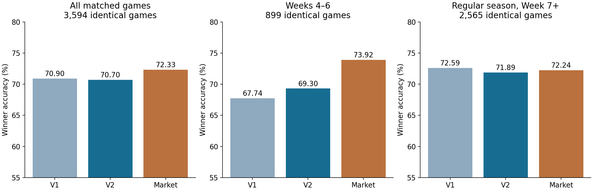
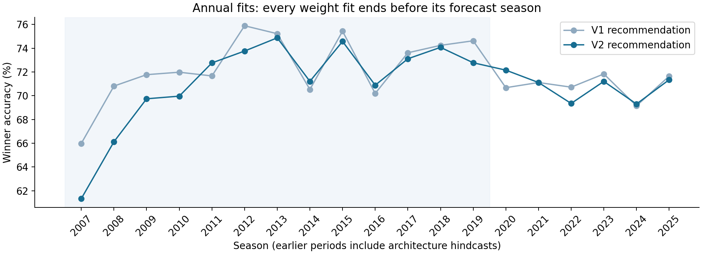

Four improvements to the season-only neural ranker
Research date: 2026-10-13 (America/Denver). Statistical snapshot: completed 2026 Week 6 games.
This study implements an early-season specialist, player availability, richer game context, and stricter chronological evaluation. It preserves equal starts and numeric current-season team inputs. Historical outcomes teach shared weights; team and player identifiers resolve joins only.
What changed and what the evidence supports
| Variant | Numeric features | Mechanism | Expert blend alpha | Validation macro accuracy | 2020–25 accuracy | Log loss |
|---|---|---|---|---|---|---|
| rich | 64 | Prior score and play summaries; new specialist training. | 0.5 | 73.05% | 70.91% | 0.5621 |
| context | 112 | Adds 40 situation/drive ratings and eight evidence/uncertainty signals. | 1.0 | 73.00% | 70.69% | 0.5673 |
| full | 152 | Adds 16 player-production/continuity signals and 24 ordered game-history signals. | 0.5 | 72.18% | 69.28% | 0.5765 |
| graph_context | 240 | Combines the previous opponent graph with every new signal. | 1.0 | 72.71% | 68.97% | 0.6212 |
The selected foundation is context: a shared 8-neuron rank network for season-wide strength and another for low-evidence games, each averaged over three seeds. The selected specialist alpha is 1.0. A separate older-fold check of V1/V2 combinations chose 100% V2 with a constant blend.
Feature variants are compared using the same later-season games. Adding player or graph features is an experiment, not an automatic improvement. The selected foundation excludes player-production inputs because the older chronological folds did not support those larger variants. Availability adjustments are implemented and evaluated with the full model variant; they are not silently added to the selected context model.
Historical development results
| Period | Games | V1 accuracy | V2 accuracy | Change | V1 log loss | V2 log loss |
|---|---|---|---|---|---|---|
| all | 3603 | 70.86% | 70.69% | -0.17 points | 0.5617 | 0.5673 |
| weeks 4 6 | 900 | 67.67% | 69.22% | +1.56 points | 0.5842 | 0.5954 |
| either team at most five games | 1379 | 68.67% | 69.83% | +1.16 points | 0.5874 | 0.5937 |
| regular week 7 onward | 2569 | 72.60% | 71.90% | -0.70 points | 0.5475 | 0.5519 |
| postseason | 134 | 58.96% | 57.46% | -1.49 points | 0.6821 | 0.6735 |
These use identical games for V1 and V2. “At most five games” uses the actual smaller pregame game count of the two teams, so delayed-start seasons are handled by evidence rather than week number. Log loss evaluates probability quality; lower is better. The earlier years and 2020–2025 seasons have been inspected during research, so none is newly untouched.

Archived market benchmarks, 2020–2025
| Benchmark | Games | V2 accuracy | Market accuracy | Difference | 95% season interval |
|---|---|---|---|---|---|
| spread market | 3594 | 70.70% | 72.33% | -1.63 points | -2.18 to -1.15 points |
| moneyline market | 3025 | 69.95% | 71.14% | -1.19 points | -1.47 to -0.91 points |
The older quote archive has no capture clock. Those comparisons remain retrospective benchmarks with unequal information-time uncertainty. The intervals resample entire seasons, with only five or six season blocks; adaptive model selection adds uncertainty beyond those intervals.
New: actual quote-time matching in 2026
| Market | Maximum quote age | Games | V1 accuracy | V2 accuracy | Market accuracy |
|---|---|---|---|---|---|
| moneyline | 24 hours | 130 | 70.77% | 70.00% | 70.00% |
| spread | 24 hours | 129 | 71.32% | 70.54% | 69.77% |
| moneyline | 72 hours | 131 | 70.99% | 70.23% | 70.23% |
| spread | 72 hours | 129 | 71.32% | 70.54% | 69.77% |
All variants on the primary 24-hour moneyline cohort
| Model | Games | Accuracy | Brier | Log_loss |
|---|---|---|---|---|
| v1_recommended | 130 | 70.77% | 0.1961 | 0.5786 |
| v2_recommended | 130 | 70.00% | 0.1939 | 0.5728 |
| v2_rich | 130 | 73.08% | 0.1971 | 0.5803 |
| v2_context | 130 | 70.00% | 0.1939 | 0.5728 |
| v2_full | 130 | 68.46% | 0.2016 | 0.5890 |
| v2_graph_context | 130 | 66.15% | 0.2111 | 0.6162 |
| moneyline_market | 130 | 70.00% | 0.1920 | 0.5618 |
The rich-input specialist has the highest observed hit rate in this small cohort, but worse probability scores than the market. Its exact paired comparison has two-sided p = 0.572 (16 neural-only correct, 12 market-only correct, excluding tied choices). This does not establish a reliable market edge, and it does not replace the older-fold selected model after seeing these results.
The public source contains 105,798 eligible quote rows after screening, covering 808 games including future fixtures. Its source commit and file hashes are saved. Quotes must be observed, captured, and available before the exact Monday forecast cutoff; older observations do not become fresh merely because they were re-ingested. One sportsbook gets one vote across vendors. Sides must come from the same book, source, and exact capture. Inferred top-ups, live/post-kickoff captures, invalid prices, missing times, and unmatched participant orientation are excluded.
Only a small 2026 replay cohort has qualifying public timestamped quotes. The 24- and 72-hour freshness rules are fixed, and the larger cap is a sensitivity analysis rather than an opportunity to choose a more flattering score. Source timestamps are public third-party assertions, not independently certified bookmaker clocks. No long historical timestamped comparison is claimed. Source: public capture archive.
1. Early-season specialist
Let n be the smaller completed-game count of the two teams. The expert gate is g = sigmoid((5−n)/1.5). Historical early-expert examples get weights 0.1+0.9g; both experts also use a four-year historical half-life. Forecast probability is (1−alpha×g)×global + alpha×g×early. The gate treats both teams symmetrically and never uses identity or preseason strength. Both networks assign an identical neutral empty snapshot a .500 probability.
2. Player availability and current-season production
The importer accepts explicit publication/availability times, effective intervals, season, team, target game when relevant, status, player join, and source. Events from later dates, other seasons, different games, or expired intervals cannot enter a forecast. Missing reports remain unknown. The injury snapshot audit rejected 120 of 120 stale or undated source records; a new snapshot date does not refresh a years-old injury note.
Player features summarize current-season quarterback usage, latest-QB performance, replacement performance with equal shrinkage, rushing/receiving concentration, absent recent production, and continuity. Athlete IDs reconcile PBP spelling changes. Only numeric summaries reach the network. For a supported full-model forecast, published absences alter expected production and replacement mix; already absent players receive no repeated penalty. Unsupported positions and ambiguous player joins are audited, not assigned invented values. Probable/questionable/doubtful weights are nominal scenario assumptions, with available/out endpoints exposed; they are not a fitted medical forecast.
The public integration pilot contains 20 sourced events from 10 articles, producing 24 game comparisons and 9 changed probabilities. Its winner accuracies are 62.50% before and 62.50% after adjustment. This hand-selected pilot is not representative and cannot establish a general injury-data edge. It exercises the actual neural prediction path. Dated articles with no precise publication clock become available after the end of that publication day; no exact intra-day time is invented.
Actual before/after predictions · Player join audit · Primary announcements and reporting sources. Complete, timestamped historical availability coverage remains a data limitation with public sources.
3. Richer context and ordered games
The new context ratings separate offense and defense in early-down passing/rushing, third-and-long conversion, short-yardage conversion, long-distance EPA, red-zone success, backed-up offense, neutral-score situations, late close situations, passing/rushing downs, first down, and fourth down. Drive features cover finishing points in the red zone and inside the 40, points per drive, net yards, positive-EPA drives, turnovers, and pace. Fits adjust for opponents and venue using completed games only.
Eight evidence signals capture opponent game counts, distinct opponents, schedule connectivity, margin and EPA variability, context coverage, high-leverage sample size, and time since the last game. Ordered histories contain eight numeric signals for each of the latest three games. These are fixed ordered features learned by the shared network, not a falsely labeled recurrent network.
4. Chronological selection and a prospective lock
Settings are selected across three folds: 2006–2013→2014–2015, 2006–2015→2016–2017, and 2006–2017→2018–2019. There are 32 configurations, three seeds for each global/early expert, and three folds: 576 valid final-search fits. The initial selection balances macro-season overall and low-evidence winner accuracy; ties use log loss. The extra V1/V2 blend check prioritizes macro-season overall accuracy. Both protocols were recorded before reading V2 later-season results.
Annual variants are refit using only earlier seasons for 2007–2026. Every team’s statistical inputs reset annually. Source hashes and validation probabilities for every configuration are saved. Validation is reused during development and therefore can itself be overfit; chronological splitting alone does not manufacture an untouched test set.
The prospective registration was issued at 2026-10-13T20:32:02.767092-06:00 (America/Denver). It freezes 789 genuinely future games, model and feature hashes, the Week 6 statistical state, available reports, timely market prices, metrics, and grading rules. Games already started at issuance cannot qualify. The registry refuses overwrite and the grader requires sourced final scores observed after the completion allowance. There is no prospective accuracy result yet.
The original registration is preserved. A separate benchmark-only addendum, recorded before the first registered game, corrects sportsbook case aliases and unverifiable raw-file references. All model forecasts remain unchanged; corrected quotes are still bounded at original issuance. The original quote input and market code are retained for audit.
Immutable registration · Issued forecasts · Search protocol · Blend protocol.
2026 Week 6 rankings
Scores are average predicted neutral-site win probability against all modeled FBS/FCS teams. Field selection only filters the output and is not a neural input. Matchup-specific availability reports apply only to their named game; neutral rankings may use applicable season-wide reports known at the snapshot.
| Rank | Team | Mean win probability |
|---|
Every historical season

Per-season accuracy, Brier score, and log loss · Exact game probabilities · Phase diagnostics · Which timestamped quotes qualified.
Scope of the finding
These experiments evaluate implemented models and data. They do not establish superiority over every published or private football model. Historical EPA fitting vintages are still unknown, and the availability archive is incomplete. The correct next evidence is the registered future cohort, graded without changing its model or selecting a convenient subset after outcomes arrive.